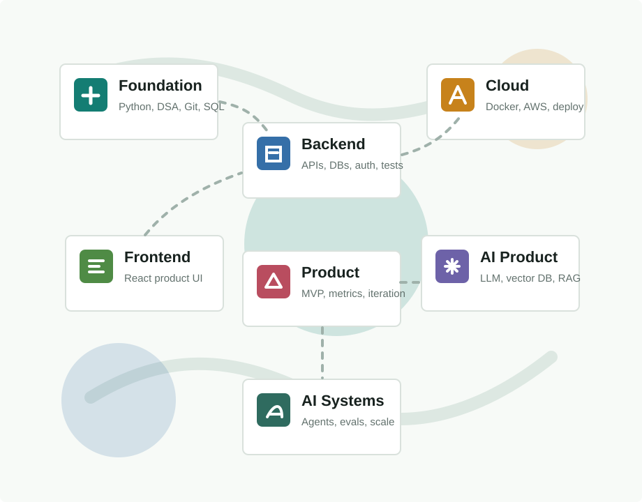

2027 graduate roadmap
Backend first. Product next. AI with real engineering depth.
A staged curriculum for moving from Stage 0 to product-company employability, then into AI product and agentic systems work.
Chosen Domain
Backend / Product Engineering
Growth path: AI Product Engineering and AI Systems Engineering.

Career architecture
Stage Path
Move only after passing the skill gates. The order matters more than the hype.
Learning sequence
Master Priority Order
The exact topic order to follow from Stage 0 to AI product engineering.
Portfolio
Project Ladder
Build small, then production-grade, then product-grade, then AI-grade. Each project now has skills, requirements, and done criteria.
Execution
18-Month Timeline
Use this as a progress map. Adjust speed, but protect the sequence.
Quality control
Skill Gates
These gates prevent jumping into advanced topics before the foundation is real.
Career system
Placement Readiness
Turn skills into interviews, offers, and high-quality project conversations.